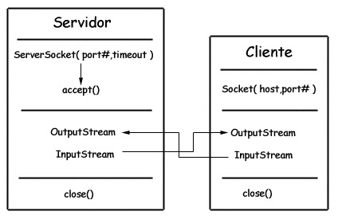
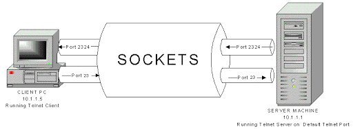
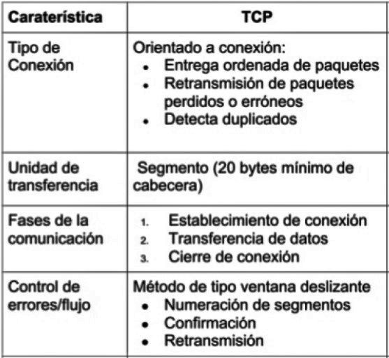

Socket TCP
Viernes 29 de Mayo del 2020
Caracteristicas Socket TCP
- El cliente debe contactar con el servidor
- El servidor debe estar ejecutándose primero
- El servidor debe haber creado un socket por el que espera que el cliente contacte con él
- El cliente crea su propio socket
- Especifica la dirección IP del servidor y el puerto de la aplicación
- Entonces se establece la conexión TCP con el servidor
- Cuando el servidor es contactado crea un nuevo socket TCP para la comunicación con el cliente
- Permite que el servidor se comunique con varios clientes simultáneamente
- La dirección IP del cliente y el puerto empleado por su aplicación sirven para distringuirlos

Caracteristicas Protocolo TCP

Sockets TCP
- Sockets CLIENTE
- Clase mas importante= Java.net.Socket
- Cliente para establecer conexión necesita crear un objeto socket
- Socket s= new Socket("servidor",puerto)
- Escribe → OutputStream
- Lee → InputStream
- Cerrar todo y liberar recursos → s.close
Programacion en Red
- Sockets en SERVIDOR
- Java.net.Socket
- ServerSocket serverSocket = new ServerSocket(puerto);
- Socket connectionSocket = serverSocket.accept(); Prácticamente toda la programación se hace sobre el connectionSocket, tal como en el Cliente
- Cerrar todo y liberar recursos → s.close
- Leer de un Socket
- java.io.InputStream is = s.getInputStream();
- java.util.Scanner scan = new Scanner(is);
- scan.hasNextLine();
- Escribir de un Socket
- java.io.OutputStream os = s.getOutputStream();
- java.util.PrintWriter pw = new PrintWriter(os,true);
- pw.println("mensaje");
Esta clase abstracta es la superclase de todas las clases que representan un flujo de entrada de bytes. Devuelve una secuencia de entrada para este socket.
Un escáner de texto simple que puede analizar tipos y cadenas primitivos utilizando expresiones regulares.
Verifica si el Socket esta abierto y puede recibir más información
Esta clase abstracta es la superclase de todas las clases que representan un flujo de bytes de salida. Una secuencia de salida acepta bytes de salida y los envía a algún sumidero.
Imprime representaciones formateadas de objetos en una secuencia de salida de texto.
Termina la línea actual escribiendo la cadena del separador de línea.